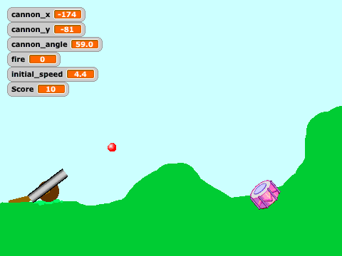
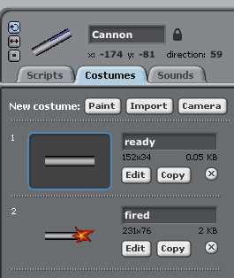
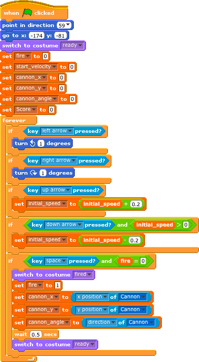
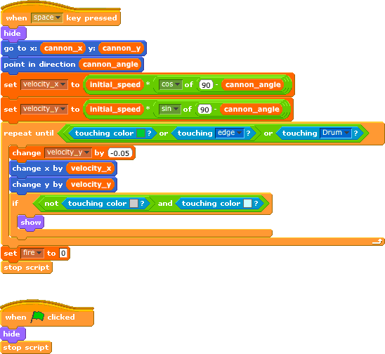
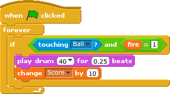

W. H. Bell, The MagPi, Issue 17
Welcome back to the Scratch Patch. This month's article is another simple arcade game. Similar to the game in Issue 13, there is plenty of scope for expanding or modifying this game too.
The idea of the game is to try to hit the drum with the cannon ball. The cannon is controlled by the cursor keys and the spacebar, where the left and right keys change the angle of the cannon, the up and down control the initial speed of the ball and the spacebar fires the cannon.

There are three sprites in this program: the cannon, the cannon ball and the drum. The cannon was drawn using the rectangle tool. Different shades of grey were used to give the appearance of a round barrel. Then the picture was copied using the Copy button. The original picture was named ready and the copy was named fired. A muzzle flash was added to the fired costume.
The cannon ball is a marble taken from the Scratch library. The Drum is also from the Scratch library. Both of these sprites were resized to the correct size.
The gun carriage is part of the stage, where the cannon was positioned on top within the cannon script.

The cannon script starts by setting the position and costume of the cannon to the default. Then the script initialises all of the global variables with 0. The fire variable is used as a boolean, where 0 is false and 1 is true. The start_velocity is the initial velocity given to the cannon ball, when the ball is fired. The centre of the cannon is stored in the cannon_x and cannon_y variables. The cannon_angle is the angle in degrees, where zero implies that the cannon barrel is pointing straight up.
After the initialisation, the cannon reacts to either the cursor keys or the spacebar. Pressing the left and right cursor keys causes the cannon to rotate one degree to the left or one degree to the right. Pressing the up cursor key causes the initial speed given to the ball to be increased by 0.2, whereas pressing the down cursor key reduces the speed as long as it is greater than zero.
Pressing the spacebar will cause the cannon to fire if fire is also set to zero. The fire variable is used to prevent the cannon ball from being fired when the cannon ball is in flight. When the cannon is fired, the costume of the cannon is changed to show a flash. Then the fire variable is set to 1 and the global variables that describe the position of the cannon are set. After 0.5 seconds the flash is removed by resetting the costume.

The cannon ball has two scripts, one to hide the ball when the green flag is pressed and another to control the motion of the ball. When the spacebar is pressed the global variables cannon_x, cannon_y and cannon_angle are used to set the position of the ball and its initial velocity. Unlike other programming languages that use radians, Scratch uses degrees for the functions sine and cosine. The 90 degree offset is used to convert the angle of cannon, such that zero degrees corresponds to the cannon pointing horizontally to the right. The sine and cosine functions are then used to set the initial velocity components.
The cannon ball moves through the air until it touches either the colour green, the edge of the stage or the drum. While none of these conditions are met, the vertical velocity component is decremented by 0.05. This decrementation corresponds to the acceleration due to gravity. Next the current x and y components of the velocity are used to move the ball through the air. The speed with which the repeat-until loop executes corresponds to the time component.
The ball is hidden unless it has completely cleared the cannon barrel. This is achieved by checking if the ball is not touching grey and is touching the colour of the sky. Lastly, when the script finishes, the global variable fire is set to zero to allow the cannon to be fired again.

There is one drum script, which is launched when the green flag is pressed. When the ball is launched, the global variable fire remains set to one until the ball touches down on the ground or the drum. Therefore, combining the fire variable requirement with touching the ball sprite implies that the program will enter the if statement once for one cannon ball flight. Once the program has entered the if condition, the drum plays a simple sound and increments the global variable score by 10 points.

In order for the cannon to be rotated around the centre of the cannon sprite, the Set costume center button should be clicked. Then put the crosshairs for both costumes at the middle of the sprite.
The motion of a projectile can be split into vertical and horizontal components. Gravity acts in the vertical direction as a downward acceleration. In the program documented in this article, air resistance is neglected. Therefore, the horizontal velocity component is constant and the horizontal distance the projectile travels is found by multiplying the initial horizontal velocity by the time it is in the air. The time the projectile is in the air is determined as the difference between the start time and when the vertical position is equal to the ground. While the projectile is in flight, gravity continues to decrement the vertical velocity until the projectile hits the ground. If the initial vertical velocity component is small, it will not take long for gravity to bring the projectile down. Notice that within this simple program the vertical position is evaluated in two steps, rather than in one equation. There is one step to evaluate the change in velocity and another to update the horizontal position.
The drum could be replaced with other objects that move around to make the game harder. There could be a time limit for the player to hit all of the targets with the cannon. The equation of motion used in this game does not include drag. Drag can be expressed as a constant force for a given velocity squared. The problem of estimating the drag could be made harder by introducing wind, which would cause the relative velocity of the ball with respect to the air to be higher.